Vine Sweeper
Introduction
Vinesweeper is a farming and hunter based minigame. It is located in Winkin's Farm.
Requirements
- Spade
- At least one flag. 10 are given for free at the beginning.
Getting There
At any farming patch you can talk to a Tool Leprechaun. They will say some magic spell and teleport you to Winkin's Farm. Familiars and pets can not be brought into the minigame.
Playing the game
Check out a video that our contributor Fractals made!
To start, speak to Mrs. Winkin, who will give you 10 free flags for free and tell you how to play the game. You can havea maximum of only 10 flags at a time.
The game involves a grid of holes. After digging at a hole with a spade a number will appear. The number indicate the number of adjacent squares that hold a seed. After locating a a dquare with a seed, you plant a flag inside the hole too bring the farmer oover to receive the seeds that in return gives you points. If the hole does not hold a seed, the flag will be lost and the number of points is reduced.
Rabbits
After planting a flag, rabbits will race the farmers to the spot you had planted. Rabbits will shrink and run away when you feed them an Ogleroot. Ogleroots can be bought from the farmer for 10gp each. Feeding the rabbits will give you 30 hunter experience each so they are great hunter xp for starting players. You are refunded the money for the ogleroots once you leave the minigame. There are a total of 8 rabbit which respawn from rabbit holes at the border of the field.
Points
Digging up the empty spot : 1 point per square uncovered.
Digging up seed : -10 point penalty.
Farmer Digs up your seed : Varies from 0 to 300s.
Vinesweeper Shop
| Rewards |
Price |
Image |
| Tomato Seeds | 10 vinesweeper points | 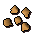 |
| Sweetcorn Seeds | 150 vinesweeper points | 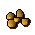 |
| Strawberry Seeds | 165 vinesweeper points | 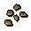 |
| Watermelon Seeds | 680 vinesweeper points | |
| Guam Seeds | 10 vinesweeper points |  |
| Marrentill Seeds | 10 vinesweeper points | 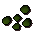 |
| Ranaar Seeds | 4000 vinesweeper po |  |
| Kwaurm Seeds | 1000 vinesweeper po |  |
| Tarromin Seeds | 10 vinesweeper po |  |
| Nasturtium Seeds | 10 vinesweeper po | |
| Woad Seeds | 30 vinesweeper po | 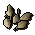 |
| Limpwurt Seeds | 70 vinesweeper po | 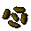 |
| Asgarnian Seeds | 5 vinesweeper po | 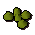 |
| Krandorian Seeds | 20 vinesweeper po | 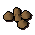 |
| Redberry Seeds | 5 vinesweeper po | 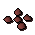 |
| Cadavaberry Seeds | 5 vinesweeper po | 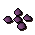 |
| Dwellberry Seeds | 5 vinesweeper po | 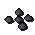 |
| Jangerberry Seeds | 10 vinesweeper po | 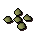 |
| Whiteberry Seeds | 25 vinesweeper po | |
| Poison Ivy Seeds | 25 vinesweeper points | 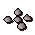 |
| Acorn Seeds | 100 vinesweeper points | 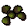 |
| Willow Seeds | 1800 vinesweeper points | 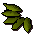 |
| Maple Seeds | 12000 vinesweeper points | 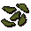 |
| Pineapple Seeds | 10000 vinesweeper points | 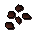 |
| Yew Seeds Seeds | 29000 vinesweeper points | 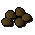 |
| Palm Tree Seeds | 35000 vinesweeper points | 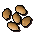 |
| Spirit Seeds | 55000 vinesweeper points | 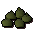 |
| Super Compost Potion | 5000 vinesweeper points | 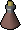 |
| Flag | 50 vinesweeper po | 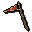 |
Update History
12 October 2021 ( Update )
Note: If you see something not on this page that currently is in-game please let Summer know.